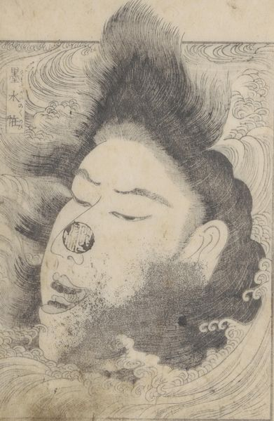

墨水の怪；スミダガワノカイ，生首；ナマクビ，女；オンナ，黒髪；クロカミ

墨水（墨田川）の怪。黒髪を乱した女の生首。四斗樽の大きさ。閉じた目を開いている。鼻先に印鑑が押されている。
著作者：葛飾隠士吉滿・蹄齋北馬／出典：親書誌：U426_nichibunken_0445：尼城錦／日付：2017／資源識別子：U426_nichibunken_0445_0003_0000
Copyright (c)2010- International Research Center for Japanese Studies, Kyoto, Japan. All rights reserved.